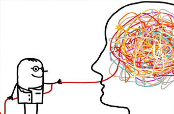

*Es importante tener en cuenta que solo un profesional de la salud mental puede realizar un diagnóstico adecuado.*
Cuestionarios:
 Trastorno de ansiedad generalizada (TAG):El TAG se caracteriza por una ansiedad y preocupación excesiva y constante sobre diversas situaciones y eventos. Las personas con TAG suelen experimentar síntomas como inquietud, dificultad para concentrarse, irritabilidad y tensión muscular.
Trastorno de pánico:
El trastorno de pánico implica la aparición repentina e inesperada
de ataques de pánico recurrentes. Los ataques de pánico se caracterizan
por una intensa sensación de miedo o malestar, acompañada de síntomas
físicos como palpitaciones, sudoración, dificultad para respirar y mareos.
Trastorno de estrés postraumático (TEPT):
El TEPT ocurre después de haber experimentado o presenciado un evento traumático.
Las personas con TEPT pueden experimentar recuerdos angustiantes del evento,
pesadillas, evitación de situaciones relacionadas, hipervigilancia y cambios
en el estado de ánimo.
Trastorno obsesivo-compulsivo (TOC):
El TOC se caracteriza por la presencia de obsesiones recurrentes y compulsiones.
Las obsesiones son pensamientos intrusivos y no deseados que generan ansiedad,
mientras que las compulsiones son comportamientos repetitivos que se realizan
para aliviar la ansiedad. Por ejemplo, alguien con TOC puede tener obsesiones
sobre la limpieza y realizar compulsiones compulsivas de lavado de manos.
Trastorno de personalidad borderline (TPB):
El TPB se caracteriza por la inestabilidad emocional, relaciones interpersonales
turbulentas y una imagen de sí mismo inestable. Las personas con TPB pueden experimentar
cambios de humor intensos, comportamiento impulsivo, miedo al abandono y dificultades para
regular sus emociones.
Trastorno depresivo mayor:
La depresión mayor se caracteriza por una tristeza persistente y una pérdida de interés
o placer en las actividades diarias. Las personas con depresión mayor pueden experimentar
cambios en el apetito, problemas de sueño, fatiga, sentimientos de culpa o inutilidad,
dificultad para concentrarse y pensamientos de muerte.
- Dr. Juan Perez
- Dr. Juan Perez
- Dr. Juan Perez
- Dr. Juan Perez
Nuestra ubicacion
Ministro Gonzalez 545
(8300) Neuquén Capital - Argentina
TELE/FAX
(54)299 4423254 / 4481180
Click sobre el mapa!
Horario de Atención
Horario a partir de
8:00 hs.a 20:00 hs.
Link de interes
- Global Bridges
- AAMR
- AsAT
- ALAT